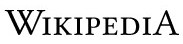

La enciclopedia libre
Español
1 664 000+ artículos
日本語
1 256 000+ 記事
Русский
1 703 000+ статей
Italiano
1 677 000+ voci
Português
1 058 000+ artigos
English
6 260 000+ articles
Deutsch
2 542 000+ Artikel
Français
2 304 000+ articles
中文
1 180 000+ 條目
Polski
1 460 000+ haseł
ES
ˇ
Leer en Wikipedia en tu idioma
ˇ